Satellite active-fire products are the only consistent global record of where and when vegetation burns, but the record is split between two instrument generations. MODIS (2000 onward) detects fire in 1 km pixels; VIIRS (2012 onward) uses 375 m pixels and sees several times more detections for the same fire activity. Joining the two naively produces an artificial step change: raw annual detections over India jump 5.4-fold between 2009–2011 (MODIS) and 2012–2014 (VIIRS), and between 2.3-fold (Argentina) and 9.1-fold (Canada) elsewhere.
We present Agnikaal, an open method and web application that removes this discontinuity. All 69.8 million NASA FIRMS detections from five countries are quality-filtered, gridded to a common ~1 km lattice and counted once per cell per day (Fire Cell-Days). Month-specific MODIS→VIIRS calibration factors are then estimated for any user-defined area from the 2012–2025 overlap, with empirical-Bayes shrinkage and leave-one-year-out cross-validation. Across the five countries the harmonized record reproduces observed VIIRS monthly activity with R² = 0.92–0.98 and a volume bias below 0.3%, whereas a naive splice under-states activity by 70–82%.
On the harmonized 2001–2025 record we detect statistically controlled changes that a split record would hide or invent: a +72% per decade rise in Canadian fire activity, a shift of Punjab–Haryana crop-residue burning from October (−46% per decade) to November (+57% per decade), and a season that arrives 10 days later per decade. Weather explains 76% of year-to-year fire variation in New South Wales but essentially none in Punjab, separating climate-driven from human-driven fire regimes.
Keywords: active fire; MODIS; VIIRS; FIRMS; sensor harmonization; inter-calibration; fire regime; fire seasonality; trend detection; early warning
Fire managers, ecologists and climate scientists need long, consistent records to answer simple questions: is this fire season unusual, is burning increasing, and is it moving in the calendar? NASA's Fire Information for Resource Management System (FIRMS) distributes near-real-time and archived active-fire detections from the Moderate Resolution Imaging Spectroradiometer (MODIS) on Terra and Aqua and from the Visible Infrared Imaging Radiometer Suite (VIIRS) on Suomi-NPP, NOAA-20 and NOAA-21 [1–3]. MODIS provides the longest record but its two satellites are ageing; VIIRS provides the future, with finer pixels and better sensitivity to small and cool fires [2].
The two records are not interchangeable. A single fire is detected by several 375 m VIIRS pixels where MODIS records one 1 km pixel, and VIIRS detects many small fires that MODIS misses. The ratio between the two is not constant: it changes with fire type, fire size, season and land cover. A naive time series that uses MODIS before 2012 and VIIRS afterwards therefore contains a spurious upward step that is large enough to dominate any real trend. Using MODIS alone avoids the step but discards the better sensor and cannot continue once MODIS is decommissioned.
The 2026 NASA Space Apps challenge Harmonization of MODIS and VIIRS Hot Spots asks for a way to combine the two records into one continuous burning-activity calendar. This report describes our solution, Agnikaal (Sanskrit/Malayalam agni, fire, and kāl, time). Our design goals were:
We use the FIRMS yearly country archives for five countries chosen to span contrasting fire regimes: India (crop-residue, shifting-cultivation and dry-deciduous forest fires), Australia (savanna and temperate forest), Canada (boreal), the United States (western wildfire and agricultural burning) and Argentina (deforestation, grassland and wetland fires). Figure 2 shows the spatial coverage.
Table 1. Datasets used.
| Dataset | Sensor / resolution | Period | Use |
|---|---|---|---|
| FIRMS MODIS Collection 6.1 active fire (MCD14DL) [1] | Terra + Aqua, 1 km | Nov 2000–2025 | Historical record, calibration input |
| FIRMS VIIRS 375 m Collection 2 (VNP14IMGT) [2] | Suomi-NPP, 375 m | 2012–2025 | Reference scale, calibration target |
| FIRMS VIIRS 375 m Collection 2 | NOAA-20, 375 m | 2018–2025 | Inter-VIIRS bridge |
| FIRMS VIIRS near-real-time feeds (24 h, 7 day) | NOAA-20, NOAA-21 | live | Early warning |
| NASA GIBS imagery; NASA Visible Earth Blue/Black Marble | VIIRS reflectance, composites | daily / static | Basemaps, 3D globe |
| NOAA CPC Oceanic Niño Index (ONI) | index | 1950–2026 | Climate predictor |
| ERA5 reanalysis via Open-Meteo archive API | ~25 km daily | 2001–2025 | Weather-driver analysis |
All FIRMS data are open (NASA LANCE/FIRMS). No commercial data were used.
Table 2. Processed volume and the size of the naive seam per country.
| Country | Detections | 0.25° tiles with fire | Raw seam jump* | Pooled k (FCD) |
|---|---|---|---|---|
| Australia | 29,712,026 | 10,816 | 5.05× | 2.30 |
| United States | 11,746,863 | 15,262 | 3.23× | 2.13 |
| Canada | 11,719,567 | 13,276 | 9.06× | 2.54 |
| India | 10,923,723 | 4,619 | 5.39× | 4.44 |
| Argentina | 5,669,609 | 4,208 | 2.32× | 2.06 |
| Total | 69,771,788 | 48,181 |
*Mean annual raw VIIRS S-NPP detections 2012–2014 divided by mean annual raw MODIS detections 2009–2011. Pooled k is the overall VIIRS/MODIS ratio after conversion to Fire Cell-Days (Section 3.2), i.e. after the pixel-size inflation has already been removed.
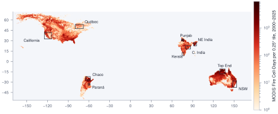
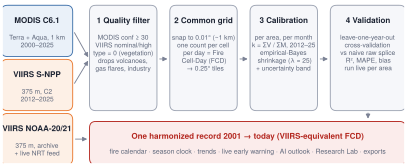
MODIS detections with confidence below 30% and VIIRS detections with low confidence are removed. Only detections of type 0 (presumed vegetation fire) are kept, which drops active volcanoes, other static land sources and offshore gas flares; these are persistent heat sources whose counts reflect industry, not burning, and they would otherwise bias both trends and the calibration.
Raw detection counts depend on pixel size: one hectare-scale fire can trigger one MODIS pixel and four to nine VIIRS pixels, and repeated overpasses on the same day add duplicates. We therefore snap every detection to a 0.01° grid (~1.1 km at the equator) and count each grid cell at most once per calendar day. The result, the Fire Cell-Day (FCD), measures how much of the landscape was burning on how many days. Counts are stored as sparse monthly series on 0.25° tiles (48,181 tiles in total) for both raw detections and FCD, for each sensor.
Converting to FCD removes most of the geometric inflation but not all of the difference: VIIRS still finds small fires that MODIS cannot see. This residual difference is what the calibration in Section 3.3 corrects.
For a selected area with monthly MODIS FCD My,m and VIIRS FCD Vy,m in overlap years y ∈ 2012–2025, the pooled ratio k̄ = ΣV / ΣM is computed first. The month-specific factor is then shrunk toward it:
km = ( Σy Vy,m + λ k̄ ) / ( Σy My,m + λ ), λ = 25(1)
This is an empirical-Bayes (beta–binomial style) estimator: months with plenty of fire are dominated by their own data, while months with only a few detections borrow strength from the pooled ratio instead of producing unstable extreme factors. The uncertainty band for each month is the standard deviation of the yearly ratios Vy,m/My,m (for months with at least three MODIS FCD), capped at km. Before 2012 the harmonized series is Hy,m = km My,m; from 2012 onward it is the observed VIIRS series. All years are thus expressed in VIIRS-equivalent Fire Cell-Days.
Gaps in the VIIRS archive are handled explicitly: a year in which VIIRS reports nothing while MODIS reports at least 20 FCD is treated as missing VIIRS data, not as an absence of fire. It is excluded from the calibration and filled with calibrated MODIS. NOAA-20 overlaps S-NPP from 2018, which lets us place the live NOAA-20/21 feed on the same scale now that the S-NPP near-real-time feed has stopped.
Calibration skill is measured by leave-one-year-out cross-validation (LOYO-CV). For each overlap year, factors are estimated from the other 13 years and used to predict that year's 12 monthly VIIRS values from MODIS. We report R², mean absolute percentage error (MAPE, for months with at least 5 FCD) and volume bias. As a baseline we evaluate the naive splice, i.e. treating raw MODIS detections as if they were raw VIIRS detections. Both are run live in the application for every area a user draws.
Figure 3a shows the problem for India. Raw MODIS detections range from about 50,000 to 100,000 per year after 2002; raw VIIRS detections are 350,000–580,000. A spliced record jumps 5.4-fold in 2012, which a trend test would read as a dramatic increase in burning. After conversion to Fire Cell-Days and monthly calibration (Figure 3b), the 2001–2011 and 2012–2025 segments join smoothly, and the remaining year-to-year variability reflects real fire activity.
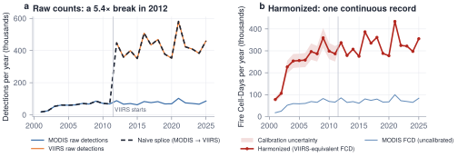
After conversion to FCD, VIIRS still records 2.1–4.4 times more fire activity than MODIS (Table 2). The ratio is not constant through the year (Figure 4). In India it is highest in the quiet monsoon month of June (6.9), when the few fires are small, and lowest in October (3.8), during the paddy-residue burning peak. Canada shows the same pattern: 4.1–4.5 in the off-season months of February–March but 2.0–2.7 during the May–September wildfire season, when large fires are visible to both sensors. In the United States, Australia and Argentina the factor varies less (1.9–2.6). Applying a single annual factor would therefore distort the seasonal shape of the record; this is why Agnikaal uses month-specific, area-specific factors.
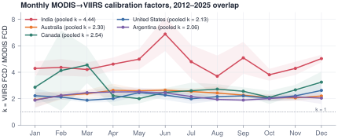
Cross-validated against observed VIIRS (Table 3, Figure 5), harmonized MODIS reproduces monthly fire activity with R² between 0.917 (United States) and 0.977 (Argentina), MAPE of 11–18% and a total volume bias within ±0.3%. The naive splice has no predictive skill (R² ≤ 0.16, negative in three countries) and under-states activity by 70–82%. Figure 5a shows that agreement holds across three orders of magnitude, from quiet months to the peak of the burning season.
Table 3. Leave-one-year-out validation over 2012–2025 (168 monthly values per country).
| Country | R² harmonized | MAPE harmonized | Bias harmonized | R² naive splice | Bias naive splice |
|---|---|---|---|---|---|
| Argentina | 0.977 | 11.6% | 0.0% | 0.00 | −69.7% |
| Australia | 0.970 | 10.7% | +0.3% | −0.50 | −77.9% |
| Canada | 0.966 | 18.0% | +0.1% | 0.16 | −82.0% |
| India | 0.973 | 14.4% | +0.1% | −0.25 | −82.2% |
| United States | 0.917 | 12.5% | +0.2% | −0.33 | −72.2% |
Negative R² means the predictor is worse than simply using the mean. At sub-national scale (ten case-study areas) LOYO R² ranges from 0.82 (New South Wales, where a single extreme season dominates) to 0.98–0.99 (Top End, Northeast India).
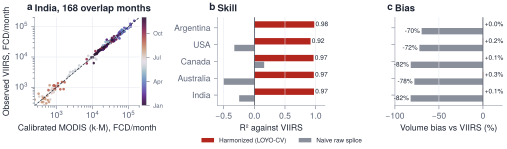
With the seam removed, long-term trends can be tested (Figure 6). Fire activity increased significantly in Canada (+72% per decade, Mann–Kendall p = 0.010), driven by the extreme seasons of 2014, 2017 and 2023–2025, and in India (+18% per decade, p < 0.001). It decreased in Argentina (−23% per decade, p = 0.030). Australia and the United States show large year-to-year swings but no significant monotonic trend over 2001–2025. Using the naive splice, every country would instead show a strong and entirely artificial increase after 2012.
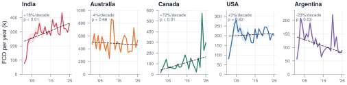
The central product of Agnikaal is the year × month burning-activity calendar (Figure 7). Because all 25 years share one scale, both the seasonal rhythm and unusual years stand out. Black Summer in New South Wales (Dec 2019–Jan 2020) and Québec's June 2023 appear as isolated extremes; Central India shows a consistent February–April forest-fire season that has intensified since about 2009; Punjab–Haryana shows a double season (April–May wheat residue and October–November paddy residue).
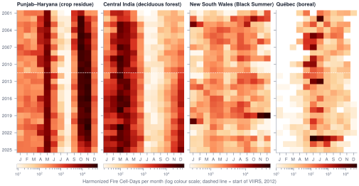
Season clocks (Figure 8) summarize each regime: Northeast India's shifting-cultivation fires are concentrated almost entirely in February–April (concentration 0.88), Québec's boreal season in June–July (0.86), whereas New South Wales burns across most of the year (0.21; critical months March–October).
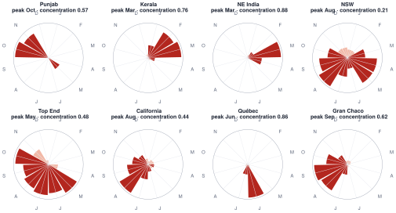
The Research Lab scans each area for trends, monthly trends, change points, timing shifts and ENSO links, and controls the false-discovery rate. Of 112 hypotheses tested across the ten case-study areas, 12 are significant at q < 0.05 (Table 4). Five areas show no significant change, which is itself informative: their year-to-year variability is large compared with any trend.
Table 4. Significant findings (Benjamini–Hochberg q < 0.05) on the harmonized 2001–2025 record.
| Area | Finding | Statistic | q |
|---|---|---|---|
| Punjab–Haryana | October burning decreasing, −46% per decade | MK τ = −0.54; Oct = 42% of annual fires | 0.001 |
| Fire season arriving later, +10 days per decade | MK τ = 0.47 on circular centre | 0.004 | |
| November burning increasing, +57% per decade | MK τ = 0.34; Nov = 36% of annual fires | 0.043 | |
| Central India | December burning increasing, +150% per decade | MK τ = 0.83 | <0.001 |
| January burning increasing, +136% per decade | MK τ = 0.70 | <0.001 | |
| Total activity rising, +38% per decade | MK τ = 0.43; Theil–Sen 1,932 FCD/yr | 0.010 | |
| Fire season arriving earlier, −7 days per decade | MK τ = −0.39 on circular centre | 0.016 | |
| Regime shift around 2009, +61% afterwards | Pettitt K = 112; 33,550 → 53,998 FCD/yr | 0.039 | |
| Top End savanna | June (early dry season) burning increasing, +18% per decade | MK τ = 0.37 | 0.043 |
| September (late dry season) burning decreasing, −39% per decade | MK τ = −0.36 | 0.043 | |
| Fire season arriving earlier, −17 days per decade | MK τ = −0.35 on circular centre | 0.043 | |
| El Niño years burn more | Spearman ρ = 0.49 with ONI, n = 25 | 0.043 |
MK = Mann–Kendall. Percentages are Theil–Sen slopes relative to the median year. All tests are reproducible in the exported notebook from the application.
Two findings illustrate why harmonization matters. In Punjab–Haryana (Figure 9) total burning has not changed significantly, but it has moved later: October activity has fallen and November activity has risen, so November's share of the paddy-residue season grew from 5–42% in 2001–2009 to a majority in every year since 2010 except 2011 and 2017. This is consistent with the 2009 groundwater-preservation laws that delayed paddy transplanting, and with later harvests. The shift pushes burning into the cold, stagnant weeks when smoke contributes most to air pollution over the Indo-Gangetic Plain. In the Top End savanna, early-dry-season (June) burning has increased while late-dry-season (September) burning has fallen, the signature of Indigenous fire-management programmes that use cool early-season burns to prevent hotter late-season wildfires.
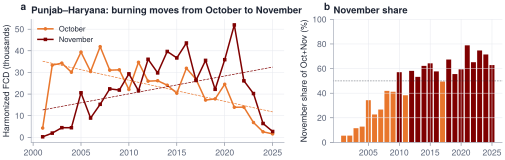
The weather-driver model (Figure 10) asks how much of the year-to-year variation in fire-season activity can be predicted from that season's weather. In New South Wales it explains 76% (LOYO R²), dominated by low humidity and low in-season rainfall: fire there is climate-driven, and the most active year in the record is the Black Summer season of 2019. California is intermediate (32%), with temperature, humidity and wind. In Punjab–Haryana and Central India weather explains essentially nothing (R² ≈ 0): fire activity is set by the crop calendar, land management and policy, not by how hot or dry the season is. This distinction matters for forecasting and for policy: weather-based fire-danger systems are informative in the first case and largely irrelevant in the second.
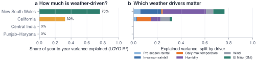
The event finder scans 48,181 tiles × 300 months and catalogues 150 extreme fire-months (30 per country) without being told where to look (Figure 11). It recovers well-documented disasters, including the alpine fires around Canberra (January 2003), Black Summer (November–December 2019), the September 2020 fire siege in California and Oregon, Canada's record 2023 season in Québec (June–July) and along the British Columbia–Northwest Territories–Alberta border (July–September), and the Uttarakhand forest fires (March 2021), together with many less publicized events in Argentina and northern Australia. Each event links back to its fire calendar and can be exported for further study.
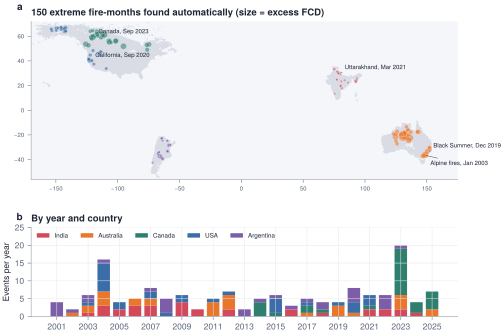
Because the harmonized record is 25 years long, a statistical outlook can be honestly backtested (Figure 12). In the fire months of the Paraná Delta, Gran Chaco, Punjab and Central India, the tercile category (below, near or above normal) one month ahead is correct 50–69% of the time against 33% by chance, and skill decays with lead time as expected. In Kerala and Northeast India the hit rate is at chance (34–35%); there, the application automatically falls back to climatology and states that there is no clear signal. We regard this self-assessment as essential for any tool used by fire managers.
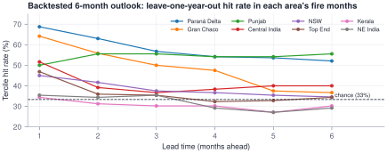
All of the above runs in a public web application (agnikaal.vercel.app) that needs no installation or login and works on phones. Users choose a region, draw a box or polygon, or enter a coordinate and radius; calibration, validation and all analytics are recomputed in the browser. Main features:
A simple, transparent procedure (quality filtering, a common Fire Cell-Day unit and month-specific, area-specific calibration with shrinkage) is enough to join 25 years of MODIS and VIIRS active-fire data into one record that agrees with VIIRS to within R² = 0.92–0.98 and removes a spurious 2.3- to 9.1-fold jump. On this record, real changes become visible and testable: rising fire activity in Canada and Central India, a later and more November-centred burning season in Punjab–Haryana, and a management-driven shift to early-season burning in northern Australia. By running calibration, validation and analysis live for any area, and by stating its own skill, Agnikaal gives fire managers, researchers and students one honest fire history to act on.
Application: https://agnikaal.vercel.app. Source code, data pipeline and processed data (MIT licence): https://github.com/abhinandaventus-max/agnikaal. Presentation, demonstration video and this report: Google Drive folder. All figures in this report are generated by report/analyze.mjs and report/figures.py in the repository, using the same code as the application.
An AI coding assistant was used to speed up writing and reviewing code, figures and documentation. The team defined the challenge approach, method, analyses and interpretation, and reviewed and tested the code (15 automated unit tests). The narration in our demonstration videos uses an AI text-to-speech voice. No AI-generated images are used; all figures are computed from NASA data by our code.
We acknowledge the use of data and imagery from LANCE FIRMS operated by NASA's Earth Science Data and Information System (ESDIS) with funding provided by NASA Headquarters, and of NASA GIBS and NASA Visible Earth. ONI data are from NOAA's Climate Prediction Center; ERA5 data are from the Copernicus Climate Change Service (ECMWF), accessed through Open-Meteo.